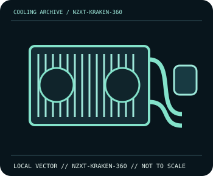

[ INDIVIDUAL COMPONENT // COOLING ]
NZXT Kraken 360 (2023)
360 mm AIO with a 1.54-inch square LCD pump head and three 120 mm radiator fans.

IDENTIFICATION: Confirm the complete model, revision, included mounting hardware, and host requirements against the manufacturer documentation before installation.
Manufacturer specifications
| Catalog subcategory | All-in-one liquid coolers |
|---|---|
| Exact model | NZXT Kraken 360 (2023) |
| Radiator | Aluminium radiator, 394 × 121 × 30 mm; three 120 mm fans. |
| Pump and display | Asetek 7th-generation pump; 1.54-inch 240 × 240 LCD display. |
| Tubing and control | 400 mm sleeved tubing; SATA power, internal USB 2.0 and PWM/tach connections; NZXT CAM is used for display/control. |
| Socket and fit | Intel LGA1851/LGA1700/LGA1200/LGA115x and AMD AM5/AM4; verify exact bracket support. Case must accept a 360 mm radiator and 394 mm radiator length. |
Compatibility and installation
Confirm case radiator position and clearance for the 394 mm radiator, fans, and 400 mm tubes before filling the loop space. Connect SATA power and internal USB as documented; secure the pump cable and confirm pump/fan operation and temperatures before sustained load.
- Disconnect system power before installation or rewiring, and follow the exact model manual.
- After assembly, confirm fan/pump operation and monitor temperatures before sustained workload.
Manufacturer source
- NZXT Support — Kraken (2023) specificationsManufacturer product documentation; check the current model revision, package contents, and local socket kit before purchase or installation.
This static catalog entry is an identification aid, not a compatibility guarantee; fit and ratings can vary by revision, mounting kit, and host configuration.